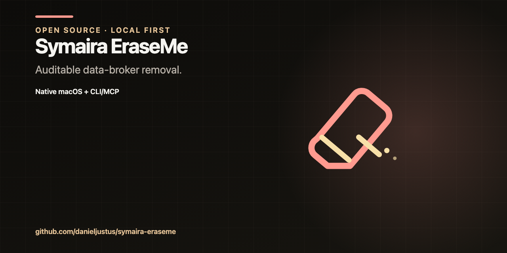
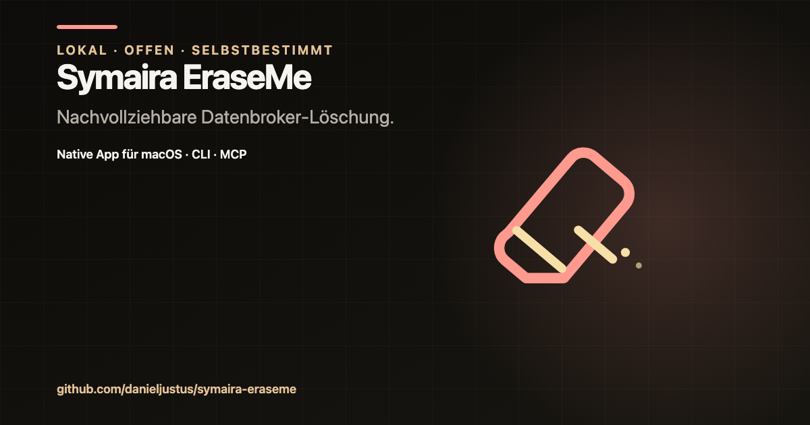
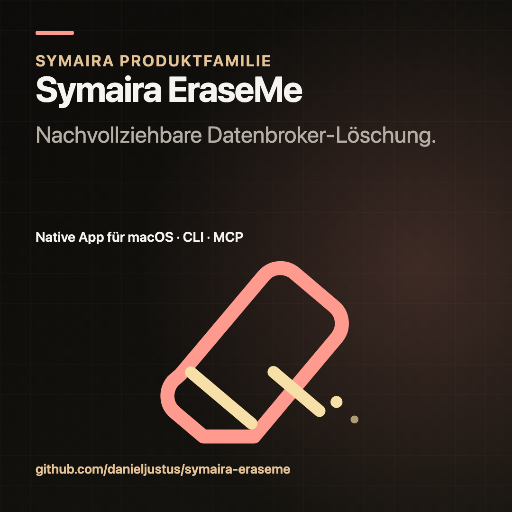
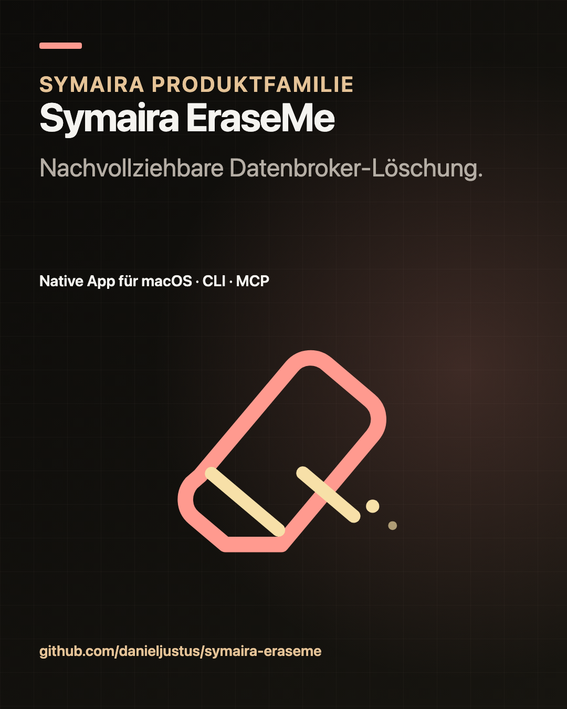
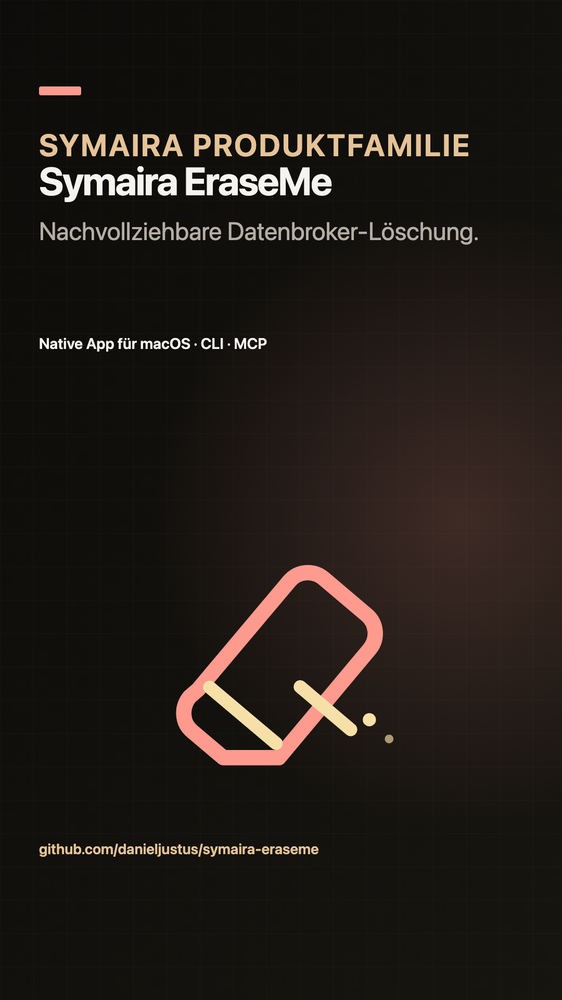
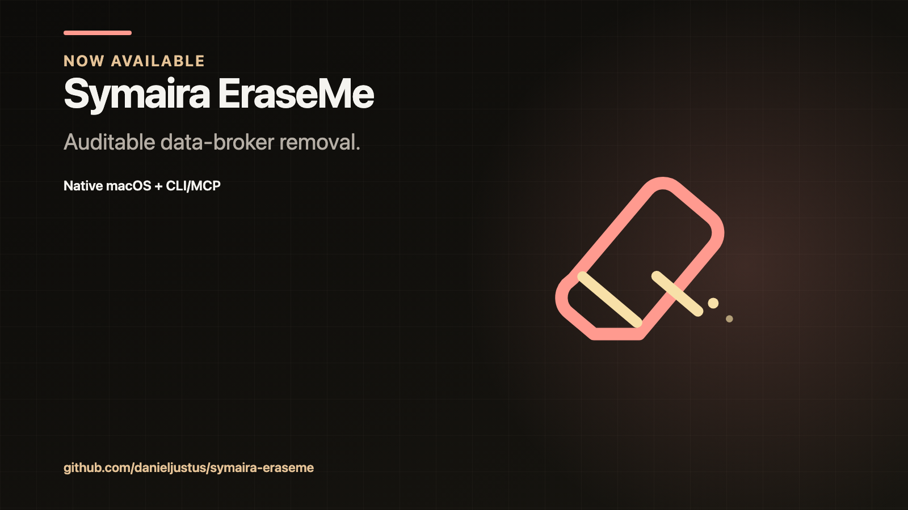
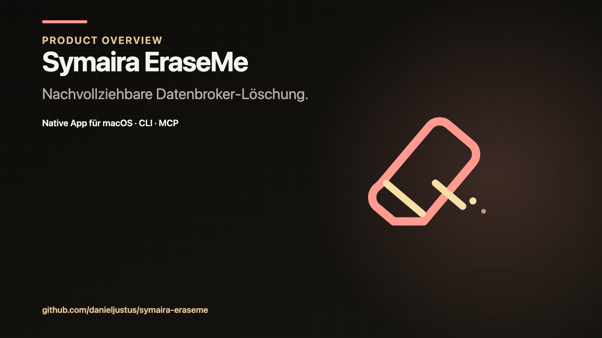

OpenDesign project hub
Symaira EraseMe
Nachvollziehbare Datenbroker-Löschung. Diese Übersicht trennt editierbare Quellen, geprüfte Exporte, UI/UX-Referenzen und Release-Handoff.

github-social-en.png
open-graph-de.png
square-de.png
portrait-de.png
story-de.png
release-card-en.png
readme-hero-de.pngVollständiges ProgrammPrivacy removal · macOS app · CLI/MCP7 Programme · 39 Schritte · 39 Zustände